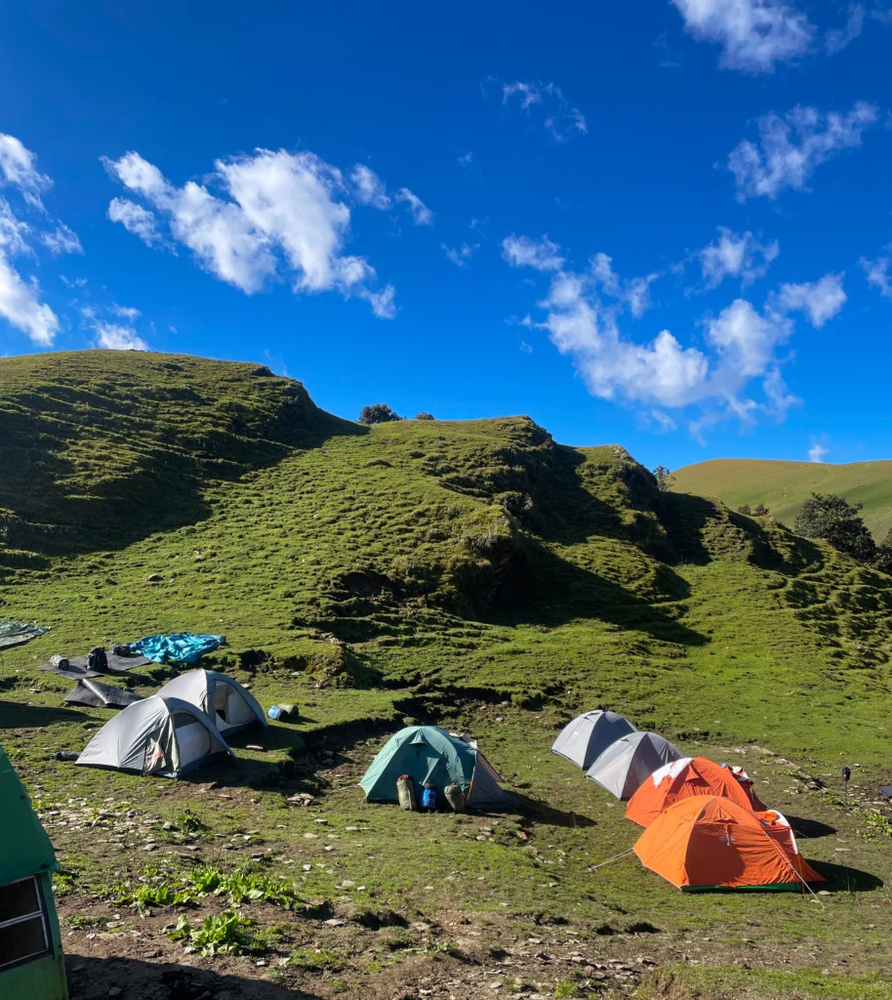

Roopkund
"Mystery Lake" — High-altitude glacial lake with ancient secrets.
"Mystery Lake" — High-altitude glacial lake with ancient secrets.

Camps and homestays near Roopkund for trekkers.
Packaged food and camp meals during trek.
Cost: ₹5,000 – ₹12,000 per person (Includes trek, stay, food – guided trek)
Duration: 5–7 days for the trek
Roopkund is a glacial lake in the Uttarakhand Himalayas, famous for the hundreds of human skeletons found at its bottom. It is a challenging trek destination with stunning views and historical mystery.